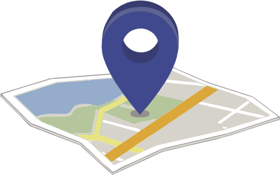

Auditorio Universitario "Dr. Samuel Ramos"
Auditorio Universitario "Dr. Samuel Ramos"
SEDES
Auditorio Universitario "Dr. Samuel Ramos"
Teatro José Rubén Romero
SEDE DEL EVENTO ACADÉMICO:
-
UMSNH
Auditorio Universitario Dr. Samuel Ramos UMSNH
Inaugurado en 1966 durante el gobierno de Agustín Arriaga Rivera, en un principio fue nombrado auditorio “Arnulfo Ávila” en honor al ex gobernador, quien aportó los recursos financieros necesarios para construirlo. En 1970 cambió su nombre por el de Auditorio “Samuel Ramos”. Este espacio es utilizado principalmente como auditorio y es actualmente administrado por la Secretaría de Difusión y Extensión Universitaria y la administración de la Facultad de Derecho y Ciencias Sociales. Tiene un aforo total de 800 personas.
Av. Tata Vasco s/n, Centro, CP 58000, Morelia, Michoacán
-
UMSNH
Centro Cultural Universitario de la UMSNH
Ubicado en el primer plano de la ciudad, el Centro Cultural Universitario se alza como una edificación universitaria de enorme importancia para la vida cultural, científica y académica de la Universidad Michoacana de San Nicolás de Hidalgo.
El Centro Cultural Universitario (CCU) se ubica en frente del Colegio de San Nicolás. Fue construido entre 1991 y 1992 con la idea de ser una reproducción de la fachada original del histórico Colegio de San Nicolás que databa del siglo XVII, antes de su reconstrucción en la segunda mitad del siglo XXI. Se trata de una aproximación con sentido histórico-didáctico, según los criterios del arquitecto constructor Manuel González Galván.
El Centro Cultural Universitario fue fundado con el propósito de incrementar la infraestructura cultural de la institución, convirtiéndose en un foro al que acuden diversos sectores de la comunidad universitaria y social.
Desde su apertura, se ha caracterizado por ser un foro universitario capaz de albergar eventos de diferente naturaleza, entre los que destacan exposiciones nacionales e internacionales, congresos, ciclos de cine, conferencias, conciertos de la OCUM de distintos géneros musicales, teatro, danza y otras actividades culturales de la academia y la ciencia. Todos ellos con la característica de ser eventos de excelencia y de alta calidad.
Ubicación: Av Francisco I. Madero Pte 350, Centro histórico de Morelia, 58000 Morelia, Mich.
-
UMSNH
Antiguo Palacio de Justicia
El antiguo Palacio de Justicia, en Morelia, es un bello edificio de fachada afrancesada y estilo ecléctico que hoy funciona como Museo y Archivo Histórico del Poder Judicial de Michoacán. Este fue el primer Museo Histórico del Poder Judicial en México y fue inaugurado el 18 de mayo de 2004.
En el sitio que hoy ocupa esta construcción se estableció la Junta de Gobierno de los españoles en la antigua Valladolid, por ello se le llamaba Casa Consistorial, que funcionó hasta la época de la Independencia.
Hacia el año de 1812, el edificio funcionó como Casa de Moneda, donde se acuñaban monedas de cobre con el emblema del Ejército del Sur, comandado por Don José María Morelos y Pavón.
Después de la remodelación integral de 1884, el edificio frontal se estableció como sede formal del Supremo Tribunal de Justicia de Michoacán como “Palacio de Justicia”.
Ubicación: Portal Allende #267, Centro Histórico, Morelia, Michoacán.
-
UMSNH
Teatro José Rubén Romero
Durante la época virreinal este recinto formó parte del conjunto arquitectónico del antiguo Colegio de la Compañía de Jesús, hasta que en la década de los sesenta fue donado a la Universidad Michoacana. Este inmueble es un digno ejemplo de la belleza arquitectónica que se aprecia en el centro de la capital michoacana. Además, es un espacio cultural multidisciplinario, utilizado como teatro y auditorio, en el que se realizan congresos, talleres, seminarios, presentaciones de libros, presentaciones de teatro, proyecciones de películas, entre otras actividades culturales y académicas.
Santiago Tapia 403, Centro Histórico, CP 58000, Morelia, Michoacán
-
Cuna Ideológica de la Independencia
Colegio Primitivo y Nacional de San Nicolás de Hidalgo
La Universidad Michoacana de San Nicolás de Hidalgo se estableció el 15 de octubre de 1917 y es, en la actualidad, la institución de educación superior de mayor tradición en el estado de Michoacán.
Sus antecedentes históricos se remontan a 1540, año en que don Vasco de Quiroga fundara en la ciudad de Pátzcuaro el Colegio de San Nicolás Obispo; gracias a sus negociaciones, Carlos I de España expidió una Cédula Real el 1o. de mayo de 1543, en la que aceptaba asumir el patronazgo del colegio, con lo que a partir de esa fecha pasaba a ser el Real Colegio de San Nicolás Obispo.
En 1580 con el cambio de la residencia episcopal de Pátzcuaro a Valladolid, San Nicolás también fue trasladado fusionado al Colegio de San Miguel Guayangareo. El 17 de octubre de 1601, Fray Domingo de Ulloa recibió la bula de Clemente VIII, que ordenaba establecer un Seminario Conciliar aprovechando la infraestructura de San Nicolás.
A finales del siglo XVII el Colegio de San Nicolás sufrió una profunda reforma en su reglamento y constituciones, que sirvió de base para la modificación al plan de estudios de principios del siglo XVIII, en el que entre otras cosas se incluyeron las asignaturas de Filosofía, Teología Escolástica y Moral. Un Real Decreto del 23 de noviembre de 1797, concedió a San Nicolás el privilegio de incorporar las cátedras de Derecho Civil y Derecho Canónico a su estructura.
Al comenzar el siglo XIX, las consecuencias del movimiento de independencia encabezado por un selecto grupo de maestros y alumnos nicolaitas, entre los que se ubican Miguel Hidalgo y Costilla, José Ma. Morelos, José Sixto Verduzco, José Ma. Izazaga e Ignacio López Rayón, llevaron al gobierno virreinal a clausurarlo.
Una vez consumada la Independencia de México, las medidas tendientes a la reapertura del plantel se iniciaron durante la década de los años veinte, tras una larga y penosa negociación entre la Iglesia y el Estado, el Cabildo Eclesiástico cedió, el 21 de octubre de 1845, a la Junta Subdirectora de Estudios de Michoacán el Patronato del plantel.
Con esta base legal, el gobernador Melchor Ocampo procedió a su reapertura el 17 de enero de 1847, dándole el nombre de Primitivo y Nacional Colegio de San Nicolás de Hidalgo, con ello se inició una nueva etapa en la vida de la institución.
Al triunfo de la Revolución Mexicana, cuando a escasos días de tomar posesión del gobierno de Michoacán, el ingeniero Pascual Ortiz Rubio tomó la iniciativa en sus manos, logrando establecer la Universidad Michoacana de San Nicolás de Hidalgo el 15 de octubre de 1917, formada con el Colegio de San Nicolás de Hidalgo, las Escuelas de Artes y Oficios, la Industrial y Comercial para Señoritas, Superior de Comercio y Administración, Normal para profesores, Normal para profesoras, Medicina y Jurisprudencia, además de la Biblioteca Pública, el Museo Michoacano, el de la Independencia y el Observatorio Meteorológico del estado.
Ubicación: Av Francisco I. Madero Pte 315, Centro histórico de Morelia, 58000 Morelia, Mich.
ORGANIZADORES